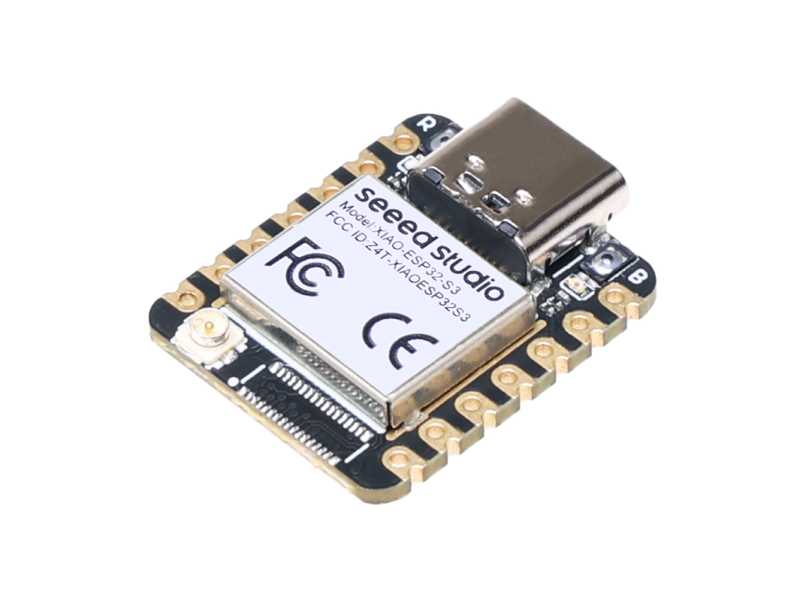

Seeed Studio XIAO ESP32S3
The Seeed Studio XIAO ESP32S3 is a general purpose board supplied by Seeed Studio and it is compatible with the Espressif ESP32S3 ecosystem, sharing the same MCU as ESP32-S3-DevKitC.

Features
ESP32-S3R8 Xtensa LX7 dual-core, 32-bit processor that operates at up to 240 MHz
On-chip 8M PSRAM & 8MB Flash
USB Type-C interface
Wireless: Complete 2.4GHz Wi-Fi subsystem;
BLE: Bluetooth 5.0, Bluetooth mesh
1x UART, 1x I2C, 1x I2S, 1x SPI, 11x GPIOs (PWM), 9x ADC
1 user LED, 1 power LED
1 RESET button, 1 BOOT button
NSH Console
The NuttShell (NSH) console is available over USB using the CDC/ACM serial interface. To access the console, connect via a terminal emulator at 115200 baud, 8 data bits, no parity, and 1 stop bit (115200-8N1).
User LED
The USER LED, a yellow LED located on the XIAO ESP32S3 board, is connected to GPIO21 as indicated in the board’s schematic. This LED can be controlled through NuttX by configuring GPIO21 as an output and toggling its state.
Pin Mapping
Pads numbered anticlockwise from USB connector.
Pad |
Signal |
Notes |
|---|---|---|
0 |
GPIO01 |
D0/A0 |
1 |
GPIO02 |
D1/A1 |
2 |
GPIO03 |
D2/A2 |
3 |
GPIO04 |
D3/A3 |
4 |
GPIO05 |
D4/SDA |
5 |
GPIO06 |
D5/SCL |
6 |
GPIO43 |
D6/Default TX for UART0 serial console |
7 |
GPIO44 |
D7/Default RX for UART0 serial console |
8 |
GPIO07 |
D8/SCK |
9 |
GPIO08 |
D9/MISO |
10 |
GPIO09 |
D10/MOSI |
11 |
3V3 |
Power output to peripherals |
12 |
Ground |
|
13 |
VIN |
+5V Supply to board |
Power Supply
The working voltage of the MCU is 3.3V. Voltage input connected to general I/O pins may cause chip damage if it’s higher than 3.3V.
Installation
Configure and build NuttX:
$ git clone https://github.com/apache/nuttx.git nuttx
$ git clone https://github.com/apache/nuttx-apps.git apps
$ cd nuttx
$ make distclean
$ ./tools/configure.sh esp32s3-xiao:usbnsh
$ make V=1
2. Connect the Seeed Studio XIAO ESP32S3, and enter “Bootloader” mode,
then, flash the nuttx.hex file using esptool:
(https://docs.espressif.com/projects/esptool/en/latest/esp32/)
Example command:
make flash ESPTOOL_PORT=/dev/ttyACM0 ESPTOOL_BINDIR=./
Configurations
Configurations can be selected using
$ ./tools/configure.sh esp32s3-xiao:<config>
where <config> is the name of one of the configurations listed below.
usbnsh
Basic NuttShell configuration using CDC/ACM serial (console enabled in USB Port, at 115200 bps).
NuttShell (NSH) NuttX-12.8.0
nsh> uname -a
NuttX 12.8.0 2c845426da-dirty Apr 6 2025 22:53:57 xtensa esp32s3-xiao
combo
This configuration enabled NuttShell via USB and enabled led and gpio examples:
Testing leds:
nsh> leds
leds_main: Starting the led_daemon
leds_main: led_daemon started
led_daemon (pid# 10): Running
led_daemon: Opening /dev/userleds
led_daemon: Supported LEDs 0x01
led_daemon: LED set 0x01
nsh> led_daemon: LED set 0x00
led_daemon: LED set 0x01
led_daemon: LED set 0x00
led_daemon: LED set 0x01
led_daemon: LED set 0x00
Testing gpios:
PIN/GPIO |
Mode |
Device |
|---|---|---|
D1/GPIO2 |
Output |
/dev/gpio0 |
D0/GPIO1 |
Input |
/dev/gpio1 |
D2/GPIO3 |
Input |
/dev/gpio2 |
nsh> ls /dev
/dev:
console
gpio0
gpio1
gpio2
null
ttyACM0
ttyS0
userleds
zero
nsh> gpio -o 1 /dev/gpio0
Driver: /dev/gpio0
Output pin: Value=0
Writing: Value=1
Verify: Value=1
nsh> gpio -o 0 /dev/gpio0
Driver: /dev/gpio0
Output pin: Value=1
Writing: Value=0
Verify: Value=0
nsh> gpio /dev/gpio1
Driver: /dev/gpio1
Input pin: Value=0
nsh> gpio /dev/gpio1
Driver: /dev/gpio1
Input pin: Value=1
nsh> gpio /dev/gpio1
Driver: /dev/gpio1
Input pin: Value=0
nsh> gpio -w 1 /dev/gpio2
Driver: /dev/gpio2
Interrupt pin: Value=0
Verify: Value=1
nsh> gpio -w 1 /dev/gpio2
Driver: /dev/gpio2
Interrupt pin: Value=0
Verify: Value=1